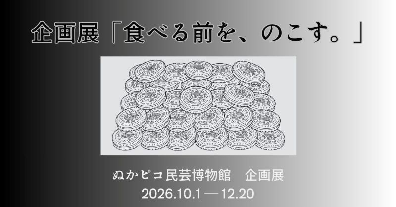

お菓子は、封を開ける前がいちばん記録に値する状態である――という発想のもと、「食べる前の状態」そのものを収集・保存する企画展です。当館の常設展示「記録具の間」が扱ってきた"使われ方の痕跡"を、今回はお菓子という題材で捉え直しています。
| 会期 | 2026年10月1日(木)〜2026年12月20日(日) |
|---|---|
| 会場 | ぬかピコ民芸博物館 特別展示室 |
| 入館料 | 常設展の入館料に含む(別途料金なし) |
| お問い合わせ電話番号 | ぬぬ-ぬかピコ-7930(なくさない) |
展示品紹介
| ポッキーの持ち手 | 五年もの。持ち手部分のみを集め、瓶詰めにして保存。本数は文化財のため未計測 |
|---|---|
| クリームを剥いだオレオ | 三年もの。クリームの剥離は専属職人による手作業。全員経験20年以上のベテラン |
| カントリーマアムの割れた端 | 七年もの。市内の収集家より寄贈された欠片のみのコレクション |
| 熟成中のカール | 封を開け、食感の変化を観察するため昨日より熟成を開始 |
| 未開封のパチパチパニック | 十五年もの。当館の目玉展示。温調金庫にて未開封のまま保管中 |
体験コーナー
「アポロのイチゴ部分とチョコ部分を綺麗に分離するワークショップ」を開催しています。専属講師「アポリスト」が、分離のコツを実演を交えてご案内します。参加無料、当日受付にてお申し込みください。
ピコぬくんの体験レポート
ピコぬくん「今日は、ぬかピコ民芸博物館の企画展に来てますぬ。入ってみますぬ」
学芸員「こんにちは。いらっしゃいませ」
ピコぬくん「ここ、前から気になっていたんですぬ。今回の企画展、お菓子の展示ってとっても珍しいですぬ？」
学芸員「はい」
ピコぬくん「どんなものが展示されているんですかぬ？ 昔のお菓子とか、外国のお菓子とかですかぬ？」
学芸員「食べものの、食べる前の状態を保存しております」
ピコぬくん「……食べる前の状態ですぬ？」
学芸員「はい」
ピコぬくん「お菓子って、食べる前が一番きれいですからね。袋を開ける前には、夢があります」
学芸員「……」
ピコぬくん「こちらは何ですかぬ？」
学芸員「ポッキーの持ち手でございます」
ピコぬくん「持ち手だけですぬ？」
学芸員「五年ものです」
ピコぬくん「五年もの……？」
学芸員「はい。持ち手の部分だけを集め、瓶に入れて保存しております」
ピコぬくん「ポッキーって、持つところにはチョコが付いてないんだぬ！あの部分、ボク大好きですぬ！」
学芸員「はい」
ピコぬくん「ボクちょうど最近、ポッキーを食べるときは、持ち手の部分を、最後にまとめて食べるようになったんですぬ！」
学芸員「そうですか」
ピコぬくん「この瓶には、全部で何本くらい入っているんですかぬ？」
学芸員「数えておりません。文化財ですので」
ピコぬくん「……そうですかぬ。触っちゃいけないんだぬ」
学芸員「はい」
ピコぬくん「あの横の瓶はなんですかぬ？」
学芸員「こちらは、クリームを剥いだオレオ、三年ものでございます」
ピコぬくん「ああ、黒いクッキーだけのやつですぬ？」
学芸員「いえ、オレオです」
ピコぬくん「……」
学芸員「こちらはクリームを剥がす技術と、保存状態が大変重要になります」
ピコぬくん「熟練の技術が必要なんですぬね」
学芸員「専属の職人がすべて手作業で行っております」
ピコぬくん「えっ。職人さんがいるんですかぬ？」
学芸員「はい。すべて経験20年以上のベテランでございます」
ピコぬくん「……じゃあ、あの奥にある瓶はなんですかぬ？」
学芸員「カントリーマアムの割れた端、七年ものです」
ピコぬくん「割れた端だけですかぬ？」
学芸員「はい」
ピコぬくん「すごいぬ……よく集めましたぬ？」
学芸員「収集家の方から寄贈されたものです」
ピコぬくん「なるほどですぬ。いろいろな人がいるんですぬ」
学芸員「はい」
ピコぬくん「……あの、あちらのコーナーは何ですかぬ？」
学芸員「封を開けて、食感の変化を楽しむために、昨日から寝かせてあるカールでございます」
ピコぬくん「カールを熟成させているんだぬ……！」
学芸員「ワインのようなものです」
ピコぬくん「ワインみたいなものですぬ？」
学芸員「いえ、カールです」
ピコぬくん「……」
ピコぬくん「ところで、ポッキーの持ち手って、五年も置いておくとどうなるんですかぬ？」
学芸員「少し艶が出ます」
ピコぬくん「艶が……？」
学芸員「はい」
ピコぬくん「それは……すごいですぬ」
学芸員「ちなみに、奥の温調金庫にあるのが当館の目玉でございます」
ピコぬくん「あの厳重な金庫には、何が入っているんですかぬ？」
学芸員「未開封のパチパチパニック、十五年ものです」
ピコぬくん「十五年ものですぬ……！中のキャンディは、まだパチパチ弾けるんですかぬ？」
学芸員「開けてみないと分かりません」
ピコぬくん「開けないんですかぬ？」
学芸員「開けたら、ただのお菓子になってしまいますので」
ピコぬくん「……まあ、展示品だからですぬ」
学芸員「何か体験コーナーなど、やっていかれますか？」
ピコぬくん「体験もあるんですかぬ？」
学芸員「はい。『アポロのイチゴ部分とチョコ部分を綺麗に分離するワークショップ』を開催しております」
ピコぬくん「ああ、手でパキッと分けるやつですぬ！少し難しそうだけど……ボクやってみたいぬ！」
学芸員「当館のワークショップには、専属講師のアポリストがおります。あちらの作業台へどうぞ」
ピコぬくんの感想
ピコぬくん「お菓子って、食べるだけじゃなくて、いろんな楽しみ方があるんですぬね。
ボクもポッキーの持ち手を、もっと大事に食べようと思いましたぬ！」